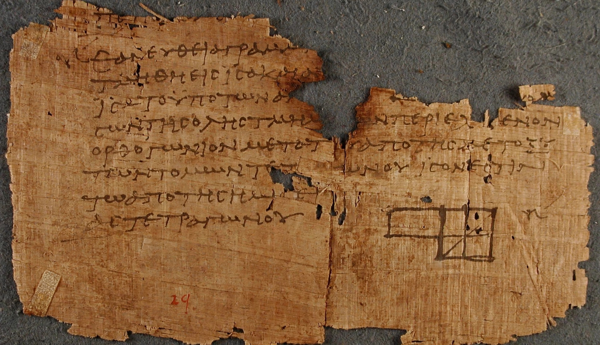

Elements may refer to several topics. This article is about Euclid's mathematical treatise. For chemical elements, see Chemical element.
| Euclid's Elements | |
|---|---|
| Author | Euclid |
| Language | Ancient Greek |
| Subject | Geometry, number theory |
| Published | c. 300 BC |

The Elements (Greek: Stoicheia) is a mathematical treatise in thirteen books attributed to Euclid of Alexandria, written around 300 BC. It systematically presents definitions, postulates (axioms), propositions (theorems and constructions) and proofs in geometry and number theory, and became the most influential textbook in the history of mathematics.
Books I–IV cover plane geometry, including the Pythagorean theorem (I.47); Book V treats proportion (Eudoxus's theory); Book VI similar figures; Books VII–IX number theory, including the infinity of primes and the Euclidean algorithm; Book X incommensurables; Books XI–XIII solid geometry, culminating in the five Platonic solids.
Euclid's five postulates include the famous parallel postulate, attempts to prove which eventually led to non-Euclidean geometry in the 19th century.
Translated into Arabic and Latin, printed in 1482 as one of the first printed mathematical books, and issued in over a thousand editions, the Elements shaped logical reasoning in science and philosophy for more than two thousand years.